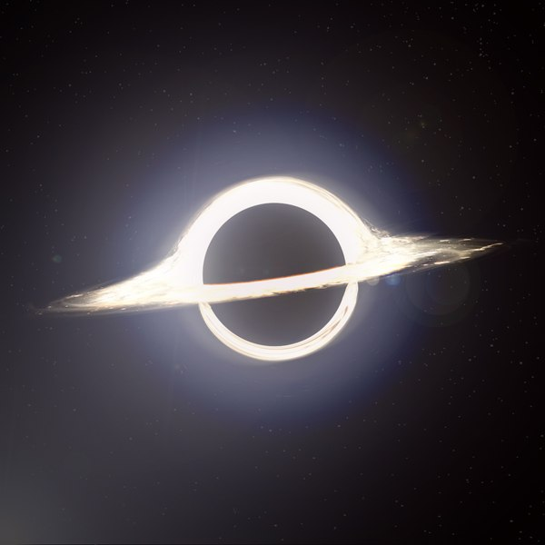
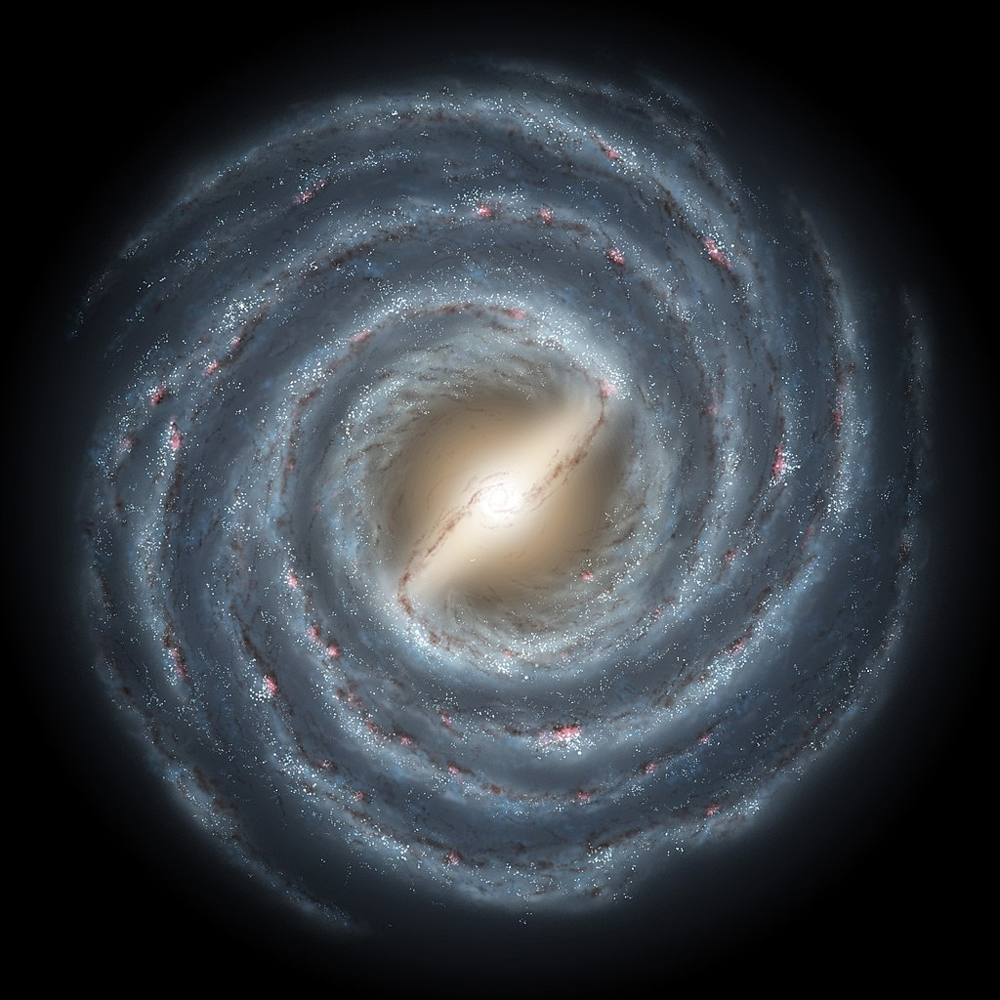

Zdjęcie czarnej dziury to jedno z największych osiągnięć współczesnej nauki i technologii. Zostało ono zaprezentowane światu w kwietniu 2019 roku przez międzynarodowy zespół badaczy projektu Event Horizon Telescope (EHT). Było to pierwsze w historii zdjęcie ukazujące cień czarnej dziury, co potwierdziło przewidywania wynikające z ogólnej teorii względności Einsteina. Zdjęcie przedstawia czarną dziurę znajdującą się w centrum galaktyki M87, oddalonej o około 55 milionów lat świetlnych od Ziemi. Czarne dziury są obiektami o tak ogromnej grawitacji, że nic, nawet światło, nie może z nich uciec. Z tego powodu nie można bezpośrednio zobaczyć samej czarnej dziury, ale możliwe jest uchwycenie tzw. horyzontu zdarzeń — granicy, za którą wszystko zostaje pochłonięte. To właśnie ten horyzont zdarzeń rzuca cień na gorący, wirujący gaz (plazmę), tworząc charakterystyczny pierścień widoczny na zdjęciu. Aby uzyskać ten obraz, użyto ośmiu zsynchronizowanych radioteleskopów rozsianych po całym świecie. Razem stworzyły one wirtualny teleskop o średnicy porównywalnej do wielkości Ziemi, co pozwoliło na uzyskanie niespotykanej dotąd rozdzielczości. Złożoność tego przedsięwzięcia była ogromna – przetworzenie danych i ich analiza zajęły kilka lat. Zdjęcie czarnej dziury nie tylko dostarczyło nam spektakularny widok na najbardziej tajemnicze obiekty we wszechświecie, ale także potwierdziło, że czarne dziury naprawdę istnieją i zachowują się zgodnie z przewidywaniami teorii Einsteina. To wydarzenie otworzyło nowe drzwi do badań nad grawitacją, astrofizyką i strukturą wszechświata.
Czarna dziura przedstawiona w filmie "Interstellar" z 2014 roku, nazwana Gargantua, to jedno z najbardziej realistycznych odwzorowań tego kosmicznego obiektu w kinematografii. Reżyser Christopher Nolan, we współpracy z naukowcem Kipem Thornem, laureatem Nagrody Nobla, zadbał o to, aby wizualizacja czarnej dziury była jak najbliższa rzeczywistości i oparta na aktualnej wiedzy astrofizycznej. to ogromna czarna dziura, wokół której krąży jedna z kluczowych planet w filmie. Co wyróżnia tę czarną dziurę, to jej realistyczne przedstawienie, oparte na dokładnych obliczeniach fizycznych. Kip Thorne, astrofizyk, który konsultował projekt, pomógł stworzyć symulację, uwzględniającą efekty ogólnej teorii względności Einsteina. W rezultacie widzimy na ekranie czarną dziurę otoczoną jasnym, wirującym dyskiem akrecyjnym, z efektem zakrzywienia światła wokół horyzontu zdarzeń. Charakterystyczny efekt wizualny polega na tym, że światło pochodzące od gazów otaczających Gargantuę jest zaginane przez ekstremalną grawitację, co tworzy efekt pierścienia wokół czarnej dziury. Ten zjawiskowy widok nie był jedynie efektem specjalnym, ale opierał się na rzeczywistych obliczeniach, które później pomogły naukowcom lepiej zrozumieć, jak takie obiekty mogą wyglądać. Ważnym wątkiem filmu jest także dylatacja czasu – w pobliżu tak ogromnej czarnej dziury czas płynie znacznie wolniej z powodu silnej grawitacji. W filmie ma to dramatyczne konsekwencje dla bohaterów, którzy na jednej z planet, krążącej blisko Gargantui, doświadczają upływu czasu zupełnie inaczej niż ci, którzy pozostali z dala od czarnej dziury. Wizja Gargantui w "Interstellar" stała się jednym z najlepszych przykładów tego, jak nauka i sztuka mogą współpracować, aby stworzyć realistyczny, ale jednocześnie niesamowity obraz wszechświata.
Droga Mleczna to galaktyka, w której znajduje się nasz Układ Słoneczny, a także miliardy innych gwiazd, planet i różnorodnych obiektów kosmicznych. Jest to galaktyka spiralna z poprzeczką, co oznacza, że ma kształt dysku z wyraźnymi ramionami spiralnymi oraz strukturą przypominającą poprzeczkę w centrum. Średnica Drogi Mlecznej wynosi około 100 tysięcy lat świetlnych, co sprawia, że jest to ogromna przestrzeń, mimo iż z kosmicznej perspektywy nie należy do największych galaktyk. Nasza galaktyka zawiera od 100 do 400 miliardów gwiazd, w tym Słońce, które znajduje się w jednym z jej ramion, zwanym Ramieniem Oriona, w odległości około 27 tysięcy lat świetlnych od jej centrum. Centrum Drogi Mlecznej jest bardzo tajemniczym miejscem — skrywa supermasywną czarną dziurę o nazwie Sagittarius A*. Obserwacje tej czarnej dziury dostarczają naukowcom wielu informacji o grawitacji i strukturze naszej galaktyki. Droga Mleczna jest częścią Grupy Lokalnej — zbioru około 54 galaktyk, w której znajdują się także najbliższe nam galaktyki, takie jak Andromeda i Galaktyka Trójkąta. Droga Mleczna i Andromeda zbliżają się do siebie z prędkością około 110 km/s i za około 4 miliardy lat te dwie galaktyki prawdopodobnie zderzą się, tworząc nową, większą galaktykę. Nasza galaktyka wciąż się rozwija, przyciągając mniejsze galaktyki satelitarne, takie jak Wielki i Mały Obłok Magellana. Jej spiralna struktura jest utrzymywana dzięki grawitacji i dynamicznym procesom wewnętrznym, takim jak formowanie nowych gwiazd. Droga Mleczna to fascynująca i wciąż nie do końca zbadana galaktyka, pełna zagadek i odkryć, które pomagają nam lepiej zrozumieć nasze miejsce we wszechświecie.
Mgławica Kraba to jedna z najbardziej znanych i najlepiej zbadanych mgławic w naszym wszechświecie. Znajduje się w gwiazdozbiorze Byka, w odległości około 6 500 lat świetlnych od Ziemi. Jest pozostałością po wybuchu supernowej, który został zaobserwowany przez chińskich astronomów w 1054 roku. Eksplozja była na tyle jasna, że była widoczna gołym okiem nawet w ciągu dnia przez kilka tygodni. Mgławica Kraba jest niezwykła ze względu na swoją strukturę i energię. Jest to tzw. mgławica supernowa, co oznacza, że powstała w wyniku gwałtownej śmierci masywnej gwiazdy. W centrum mgławicy znajduje się pulsar, czyli szybko wirująca gwiazda neutronowa, która powstała w wyniku zapadnięcia się jądra tej gwiazdy po wybuchu. Pulsar emituje regularne impulsy promieniowania elektromagnetycznego — zarówno w zakresie radiowym, jak i w promieniach X oraz gamma. Wiruje on z ogromną prędkością, wykonując około 30 obrotów na sekundę. Mgławica Kraba jest źródłem intensywnego promieniowania, a energia emitowana przez pulsar rozświetla gaz i pył pozostały po wybuchu. Mgławica rozciąga się na około 11 lat świetlnych i rozszerza się w miarę upływu czasu, co czyni ją dynamicznym obiektem do badań astrofizycznych. Jest również jednym z najważniejszych źródeł badania kosmicznych promieniowania wysokoenergetycznych. Naukowcy badają ją, aby lepiej zrozumieć procesy zachodzące podczas wybuchu supernowych oraz ewolucję gwiazd neutronowych i pulsarów. Mgławica Kraba to prawdziwa kosmiczna ikona, która od wieków fascynuje astronomów i nadal dostarcza ważnych informacji na temat najbardziej energetycznych procesów w kosmosie.
Rozwój teorii kwantowej: Teoria kwantowa, która rewolucjonizowała nasze rozumienie mikroskopowego świata, wciąż ma wiele do odkrycia. Obecnie naukowcy badają zjawiska takie jak splątanie kwantowe, teleportacja kwantowa i komputery kwantowe. Teleportacja kwantowa, polegająca na przenoszeniu stanu kwantowego z jednego miejsca na drugie bez przesyłania materii, staje się realnym obszarem badań. W miarę rozwoju technologii komputery kwantowe mogą zrewolucjonizować sposób obliczeń, przyspieszając rozwiązywanie problemów, które obecnie zajmują klasyczne komputery miliony lat. Jednak zrozumienie kwantowej natury rzeczywistości niesie za sobą wiele pytań. Na przykład, jak łączy się teoria kwantowa z ogólną teorią względności, która opisuje grawitację? Czy istnieje możliwość stworzenia ogólnej teorii wszystkiego, która zjednoczy te dwa fundamenty fizyki? W przyszłości kluczowym wyzwaniem będzie zrozumienie grawitacji w kontekście teorii kwantowej. Możliwe, że odkrycia w tej dziedzinie doprowadzą do stworzenia nowej gałęzi fizyki, która lepiej wyjaśni zjawiska w skali mikro i makro.
Zastosowania technologiczne i nowe materiały: W miarę jak fizyka rozwija się, jej zastosowania technologiczne stają się coraz bardziej zaawansowane i wszechobecne. Zastosowanie nanotechnologii, materiałów o właściwościach superprzewodzących oraz zrozumienie struktury ciał stałych otwierają nowe możliwości w inżynierii i technologii. Superprzewodniki, na przykład, mogą zrewolucjonizować transport energii elektrycznej, umożliwiając przesył energii bez strat. W miarę postępu badań nad nowymi materiałami, takimi jak grafen, mogą pojawić się zupełnie nowe technologie, które zmienią nasze życie codzienne. Również badania w dziedzinie energii odnawialnej mogą skorzystać z odkryć w fizyce. Technologie takie jak ogniwa słoneczne, panele fotowoltaiczne czy ogniwa paliwowe są już wykorzystywane w codziennym życiu, ale ciągłe poszukiwanie bardziej efektywnych rozwiązań stanie się kluczowe w walce ze zmianami klimatycznymi. W przyszłości fizyka może pomóc w stworzeniu bardziej wydajnych i ekologicznych źródeł energii, które zaspokoją rosnące potrzeby globalnego społeczeństwa.
Wyzwania i nowe kierunki badań: Przyszłość fizyki stawia przed naukowcami wiele wyzwań, które mogą wymagać innowacyjnych podejść i współpracy interdyscyplinarnej. Jednym z największych wyzwań będzie zrozumienie ciemnej materii i ciemnej energii, które stanowią około 95% wszechświata, ale pozostają jednymi z najbardziej tajemniczych komponentów. Zrozumienie ich natury może dostarczyć kluczowych informacji na temat struktury i ewolucji wszechświata. Kolejnym interesującym kierunkiem badań mogą być zjawiska związane z czasem i przestrzenią. Teoria względności wciąż wywołuje wiele pytań dotyczących natury czasu i jego relacji z przestrzenią. W miarę jak naukowcy badają kwantowe aspekty czasu, mogą pojawić się nowe teorie, które zrewolucjonizują nasze rozumienie rzeczywistości. Ponadto, rozwój sztucznej inteligencji i technologii komputerowej otwiera nowe możliwości w analizie danych i symulacji w fizyce. Interdyscyplinarne podejścia mogą prowadzić do odkryć, które zmienią nasze zrozumienie fundamentalnych zasad fizyki.
Zdjęcie czarnej dziury
Czarna dziura przedstawiona w filmie Interstellar
Droga Mleczna
Mgławica Kraba